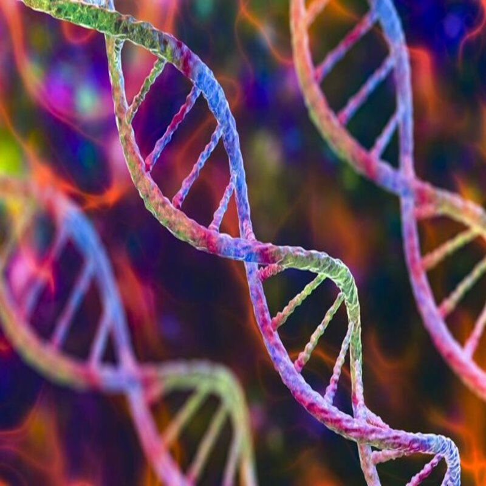

Contenido: identificar patrones en el crecimiento y comportamiento de los seres vivos.
Enfoque: como la transferencia y variabilidad genética afectan la adaptación y evolución de las especies.
La progresión 5: “Patrones y variabilidad” de la materia Organismos: estructura y procesos. Herencia y evolución biológica se enfoca en el análisis de las semejanzas y diferencias que existen entre los organismos, así como en los patrones que se presentan en la herencia de ciertas características. En este tema se estudia cómo los rasgos biológicos pueden seguir determinados patrones al transmitirse de una generación a otra, lo que permite identificar regularidades en la herencia.
Además, se aborda el concepto de variabilidad biológica, el cual explica por qué los individuos de una misma especie no son exactamente iguales. Esta variación puede deberse a factores genéticos y ambientales, y es un elemento fundamental para la adaptación y la evolución de las especies.
En conjunto, esta progresión permite comprender que los patrones de herencia y la variabilidad entre los organismos son aspectos clave para explicar la diversidad de la vida.